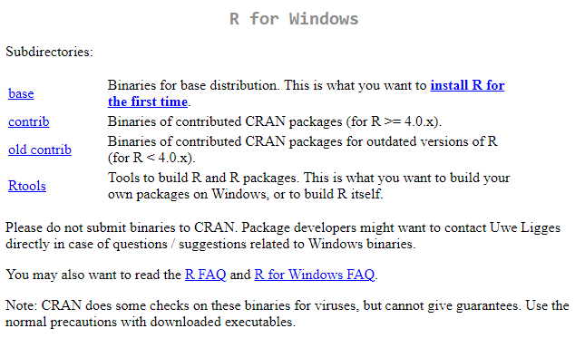
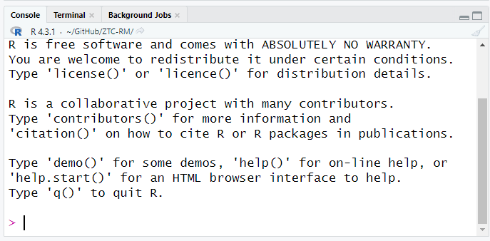

Chapter 1 Introduction to R and R Studio
Welcome to the beginning of your journey into the world of statistical analysis with R and R Studio. This section will introduce you to the fundamental concepts and tools you’ll use throughout this course to explore and analyze data.
1.1 What is R?
R is a powerful statistical programming language used widely by statisticians, data scientists, and researchers to analyze and visualize data. It’s open source, which means it is free to use, and has a vast community of users and developers who contribute to its continuous development.
 Screenshot of the R Project homepage, where R can be downloaded.
Screenshot of the R Project homepage, where R can be downloaded.
1.1.1 Features of R
- Statistical Analysis: Provides a wide array of techniques for data analysis, including linear and nonlinear modeling, classical statistical tests, time-series analysis, classification, clustering, and more.
- Graphics: Boasts high-quality graphics capabilities that allow for the creation of well-designed publications and interactive visualizations for the web.
- Packages: Comes with a comprehensive ecosystem of packages, available through the Comprehensive R Archive Network (CRAN), which extend R’s capabilities to handle tasks related to psychological research and beyond.
- Programming: Supports both procedural programming with functions and object-oriented programming with generic functions.
- Community Support: Has a large, active community offering support through mailing lists, forums, and blogs.
1.2 What is R Studio?
R Studio is an integrated development environment (IDE) for R. It provides a user-friendly interface that makes using R easier and more efficient. R Studio includes a console, syntax-highlighting editor that supports direct code execution, and tools for plotting, history, debugging, and workspace management.
 Overview of the R Studio interface.
Overview of the R Studio interface.
1.2.1 Why Use R Studio?
- Ease of Use: The R Studio environment organizes everything you need to write code, visualize data, and debug errors in one place.
- Productivity Tools: Features like code completion, snippets, and the ability to directly output graphs enhance productivity.
- Project Management: Simplifies the process of managing files associated with specific projects, making it easy to handle multiple, complex research projects.
- Reproducibility: Encourages reproducible research by integrating well with R Markdown, which allows you to create dynamic reports that blend R code with narrative text and output.
1.3 R and R Studio in Psychological Research
In psychological research, R and R Studio play a critical role in: - Data Collection and Cleaning: Handling and cleaning raw data from experiments or surveys. - Statistical Testing: Performing t-tests, ANOVA, regression analyses, and more sophisticated statistical models. - Data Visualization: Creating compelling visualizations to explore data trends and communicate results. - Reproducible Research: Producing reproducible analyses that can be shared and verified by others, enhancing the transparency and credibility of research findings.
Example of a data visualization created in R.
In the next sections, we will guide you through installing R and R Studio on your system and begin exploring their capabilities through practical exercises. This foundation will set you up for success as you dive deeper into the statistical techniques and tools that will be covered throughout this course.
1.4 Installing R
To utilize R and R Studio for your statistical analysis, the first step is to install R. R is the underlying statistical computing environment, while R Studio provides an integrated development environment (IDE) for R. Below are the detailed instructions for installing R on Windows and macOS.
1.4.1 Installing R on Windows
Follow these steps to install R on a Windows computer:
Visit the CRAN Website: Go to the Comprehensive R Archive Network (CRAN) at https://cran.r-project.org. This website hosts the R software and its documentation.
Download R for Windows: Click on the link titled “Download R for Windows”. This will take you to the Windows download page.
CRAN HomepageInstall R Base: On the download page, click “install R for the first time” to navigate to the base distribution page. There, download the latest version of R by clicking the link at the top of the page.
 Download R for Windows
Download R for WindowsRun the Installer: Once the download is complete, open the executable file to start the installation process. Follow the prompts in the installer, accepting the default settings for a standard installation.
Complete the Installation: After following the installation prompts, click ‘Finish’ to complete the installation.
1.4.2 Installing R on macOS
Follow these steps to install R on a macOS computer:
Visit the CRAN Website: Navigate to https://cran.r-project.org to access the CRAN homepage.
Download R for macOS: Click on the “Download R for (Mac) OS X” link to go to the macOS download page.
 CRAN Homepage
CRAN HomepageInstall R Package: On the macOS download page, select the package suitable for your version of macOS. Click on the link to download the
.pkginstaller file. Download R for macOS
Download R for macOSRun the Installer: After the download is complete, double-click on the
.pkgfile to open the installer. Follow the on-screen instructions, accepting the default options where suggested.Complete the Installation: Proceed through the installer by clicking ‘Continue’ and then ‘Install’. You may need to enter your administrator password. Click ‘Finish’ once the installation process completes.
1.4.3 Verify Installation
After installing R on your system, it’s a good idea to verify that it was installed correctly:
- Open R: Search for R in your applications (Windows) or use Spotlight (macOS) to find and launch R.
- Check Version: In the R console, type
versionand press Enter. This will display information about the R version installed on your computer.
1.5 Installing R Studio
Once R is installed on your computer, the next step is to install R Studio, which will serve as your primary interface for writing and running R scripts. Here are step-by-step instructions to install R Studio on both Windows and macOS.
1.5.1 Before You Install
Before installing R Studio, make sure that: - R is Installed: R Studio requires R to be installed on your computer. If you haven’t installed R yet, please refer to the previous section for instructions. - System Requirements: Check the R Studio website for the latest system requirements to ensure compatibility with your operating system.
1.5.2 Installing R Studio on Windows
Follow these steps to install R Studio on a Windows computer:
Download R Studio: Visit the Posit website at https://posit.co/download/rstudio-desktop/ and navigate to the Download R Studio Desktop section. Click on the “Download RStudio Desktop for Windows” button.
 Download R Studio for Windows
Download R Studio for WindowsRun the Installer: After the download is complete, open the executable file to start the installation process. You may receive a security warning; click ‘Run’ to proceed.
Follow the Installation Prompts: The installer will guide you through the setup process. Accept the license agreement and keep the default installation settings unless you have specific preferences.
Complete the Installation: Click ‘Finish’ to complete the installation process. R Studio should now be installed on your computer.
1.5.3 Installing R Studio on macOS
Follow these steps to install R Studio on a macOS computer:
Download R Studio: Visit the Posit website at https://posit.co/download/rstudio-desktop/ and navigate to the Downloads table. Select the macOS linked file to download R Studio Desktop
 Download R Studio for macOS
Download R Studio for macOSOpen the Installer: After the download, locate the
.dmgfile in your Downloads folder and double-click to open it.Drag R Studio to Applications: A new window will open showing the R Studio icon. Drag this icon to your Applications folder to install the application.
Complete the Installation: Double-click R Studio from your Applications folder to ensure it opens correctly and completes any setup it requires the first time it runs.
1.6 Understanding the R Studio Interface
R Studio is a powerful integrated development environment (IDE) designed to make working with R more efficient and user-friendly. Understanding the layout and functionalities of the R Studio interface is crucial for effective data analysis. This section will guide you through the various components of the R Studio interface.
1.6.1 The R Studio Layout
R Studio’s interface is divided into four main panes, each serving distinct functions that are essential for various aspects of programming and data analysis. Here’s an overview of these panes and their default configurations:
Overview of the R Studio interface.
1.6.2 Purpose of Each Pane
- Console Pane
- Description: This is where R scripts are executed. You can type R commands directly into the console and see the output of these commands.
- Importance: It’s crucial for trying out quick commands and viewing their output immediately. 
- Source Pane
- Description: This pane is used for writing and editing scripts. Scripts are essentially files containing a series of R commands.
- Importance: The source pane allows for more complex script development, which can be saved, shared, and run repeatedly.

- Environment/History Pane
- Description: The Environment tab shows the current working dataset and variables stored in memory. The History tab tracks the commands that have been executed.
- Importance: This pane is vital for managing the objects in your current R session and reviewing or re-running previous commands.

- Files/Plots/Packages/Help/Viewer Pane
- Description: This multifunctional pane allows users to navigate files, view plots, manage R packages, access R documentation (Help), and view web content (Viewer).
- Importance: It supports a wide range of activities from managing the files related to your projects, visualizing data outputs, installing and loading libraries, seeking help on functions, and displaying HTML content.

1.6.4 Best Practices
- Familiarize Early: Spend some time exploring and customizing the R Studio interface to suit your workflow. This familiarity will increase your productivity.
- Keyboard Shortcuts: Learn and utilize R Studio keyboard shortcuts to speed up your coding and navigation. You can find a list of shortcuts by pressing
Alt + Shift + K.
Understanding the layout and functionality of the R Studio interface is the first step toward mastering R for statistical analysis. As you become more familiar with these tools, you’ll find that R Studio enhances your efficiency and effectiveness in data analysis tasks.